Синтаксис языка ДРАКОН
Здесь описаны основные конструкции языка ДРАКОН, применяемые в ДраконТех для программирования.
Привет, мир
Вот представление канонического алгоритма "Привет, мир" на ДРАКОНе.
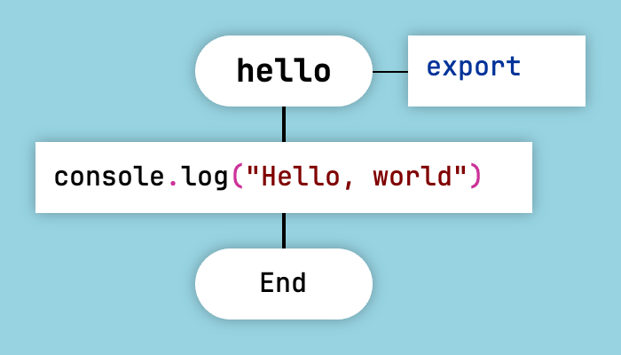
Привет, мир на ДРАКОНе
Вызовы процедур и присваивания помещают в иконы «Действие». Икона «Действие» имеет форму прямоугольника.
Аргументы функции
Чтобы добавить аргументы к функции, щёлкните правой кнопкой мыши по заголовку диаграммы и выберите пункт «Свойства» в контекстном меню.
Затем добавьте по одному аргументу на строку, без запятых.
В диалоге «Свойства» также можно задать флаги функции, например export и async.
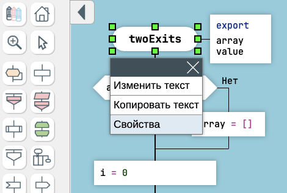
Аргументы функции
Аргументы функции и флаги будут отображаться в иконе «Формальные параметры» справа от заголовка диаграммы.
Вопрос
Икона «Вопрос» в ДРАКОНе является аналогом конструкции if-else.
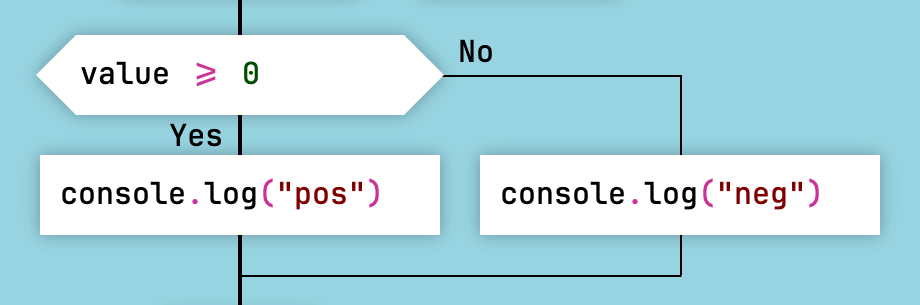
Икона "Вопрос"
Следуйте правилу "чем правее, тем хуже":
- Царская дорога (happy path) должна идти вниз по шампуру (главной вертикальной линии).
- Менее удачные сценарии должны уходить вправо.
- Обработка ошибок должна однозначно уходить вправо.
- Если оба сценария одинаково успешны, вниз по шампуру должен идти наиболее ожидаемый и наиболее частый вариант. Менее частый вариант должен уходить вправо.
Обратите внимание, что выходы Да и Нет можно поменять местами. Для этого щёлкните правой кнопкой мыши по иконе «Вопрос» и выберите пункт Поменять местами Да и Нет в контекстном меню.
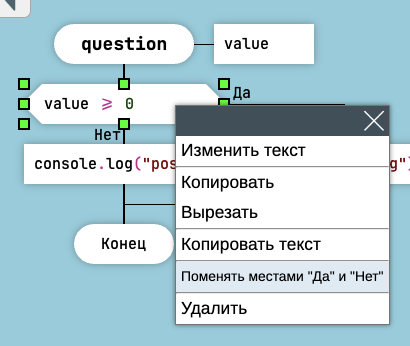
Поменять местами Да и Нет
Поскольку выходы можно менять местами, логический оператор НЕ и оператор НЕ РАВНО (!=) в ДРАКОНе являются избыточными.
Не используйте операторы НЕ и НЕ РАВНО при программировании на ДРАКОНе, потому что они добавляют ненужную сложность.
Визуальные логические формулы
ДРАКОН не поощряет использование логических операторов И и ИЛИ. Они быстро выходят из-под контроля, особенно когда количество операндов превышает два.
Вместо этого следует использовать визуальные логические формулы.
Вот визуальная формула для оператора И: valueA И valueB И valueC.
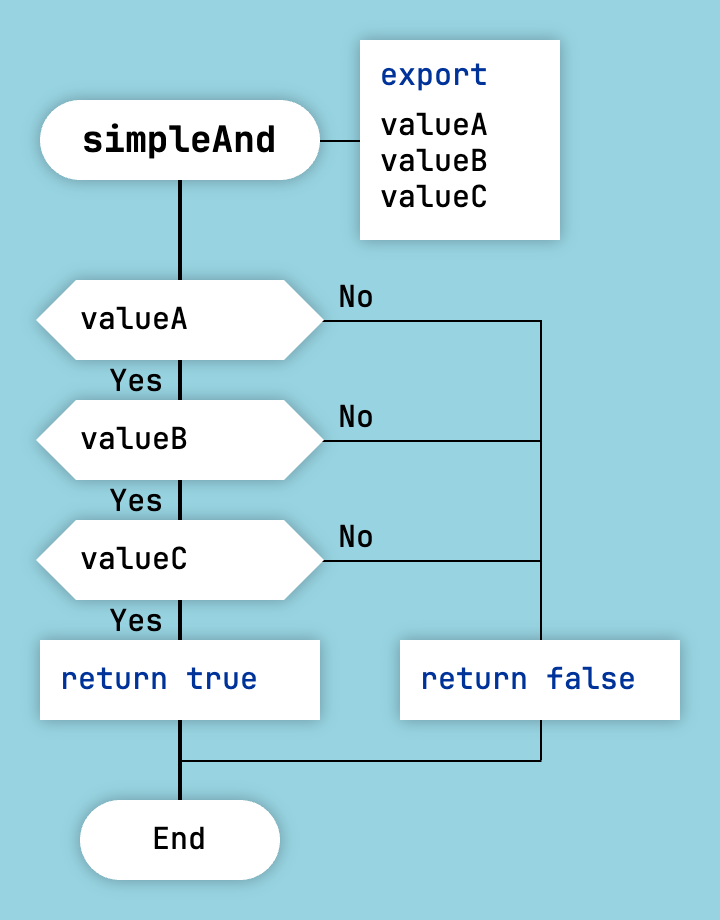
Визуальная формула для оператора И
Вот инвертированная формула для оператора И: one === 1 И two === 2 И three === 3. Используйте инвертированную формулу, если хотите выразить намерение если (one === 1 И two === 2 И three === 3) { ... }, а ветка то на блок-схеме должна идти вправо.
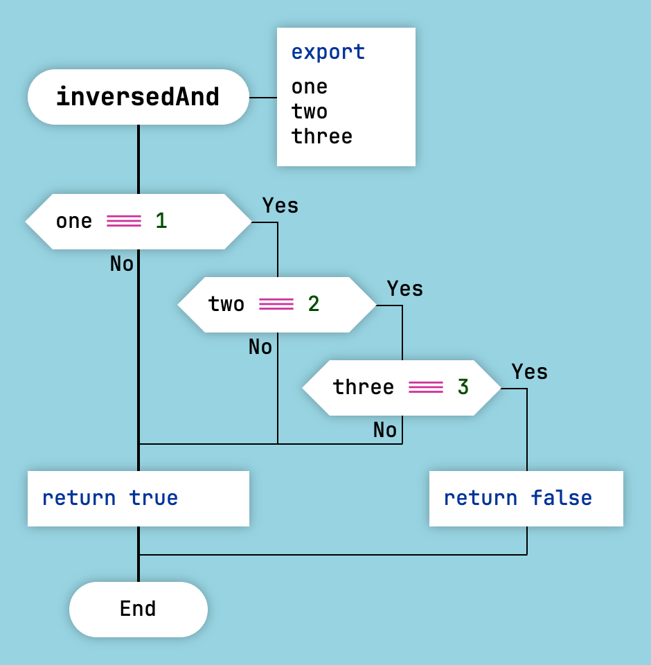
Инвертированная формула для оператора И
Оператор ИЛИ аналогичным образом преобразуется в визуальные логические формулы.
Вот визуальная формула для оператора ИЛИ: valueA ИЛИ valueB ИЛИ valueC.
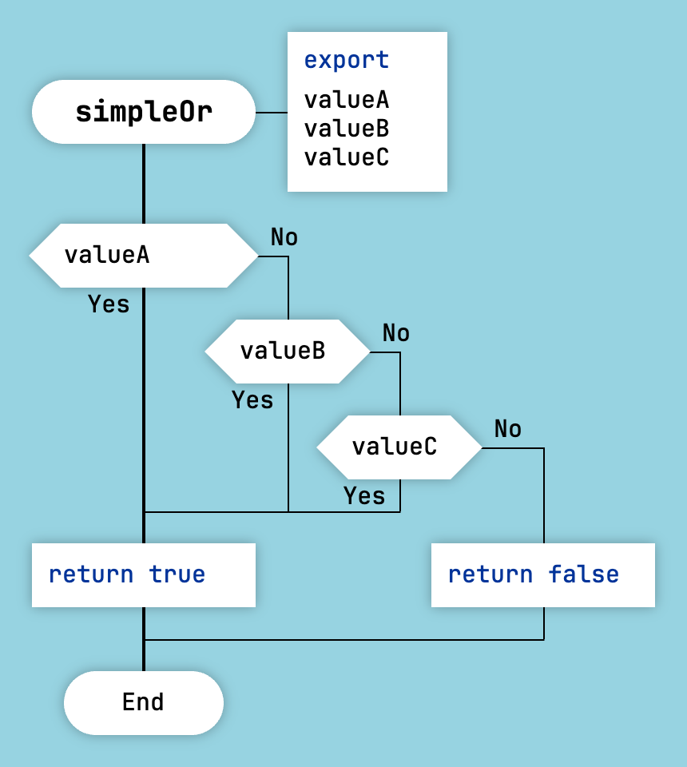
Визуальная формула для оператора И
Вот инвертированная формула для оператора ИЛИ.
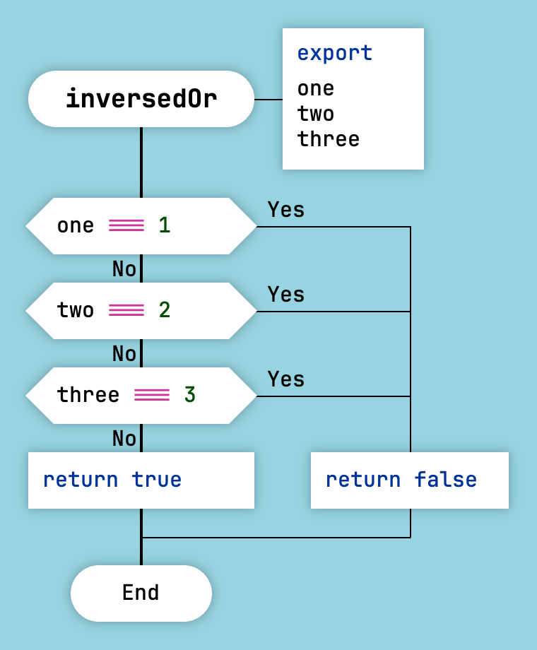
Инвертированная формула для оператора И
Как и в случае с простыми условиями, здесь нет необходимости использовать операторы НЕ и НЕ РАВНО.
Выбор
Икона «Выбор» в ДРАКОНе является аналогом конструкции switch-case.
Иконы «Вариант» содержат значения вариантов.
Чтобы добавить вариант по умолчанию, добавьте справа пустую икону «Вариант».
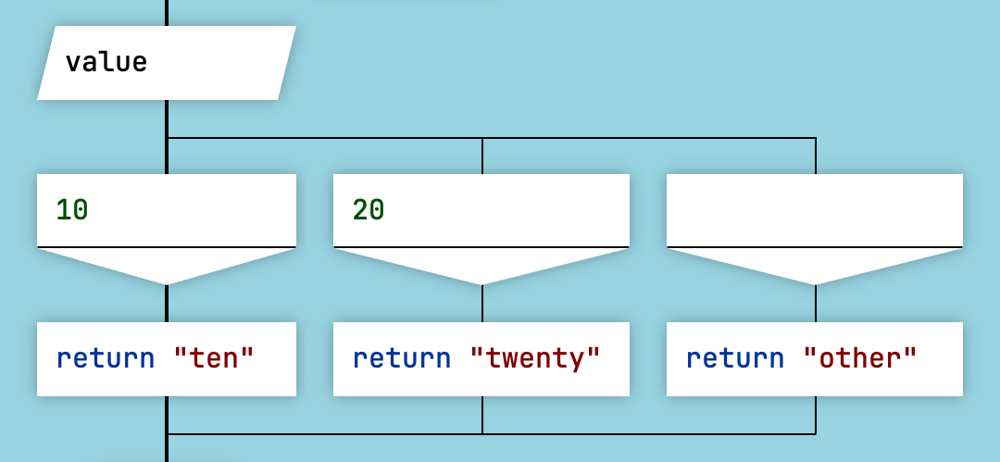
Икона "Выбор"
По возможности рекомендуется располагать значения вариантов по возрастанию или по убыванию.
Цикл Для
Икона "Цикл Для" является аналогом операторов цикла for и foreach.
Формат иконы "Цикл Для" немного отличается в зависимости от целевого языка.
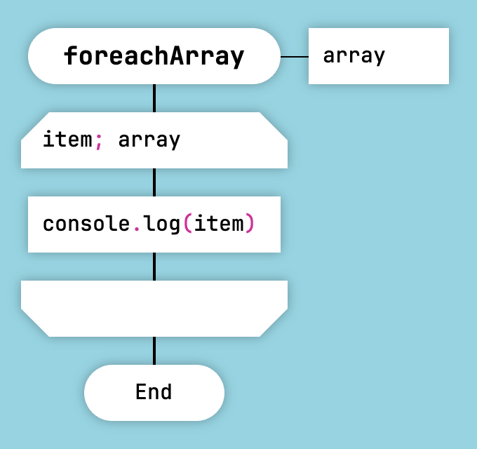
Перебор массива в JavaScript и Lua
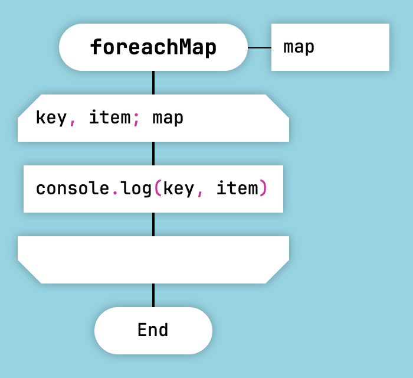
Перебор объекта в JavaScript и Lua
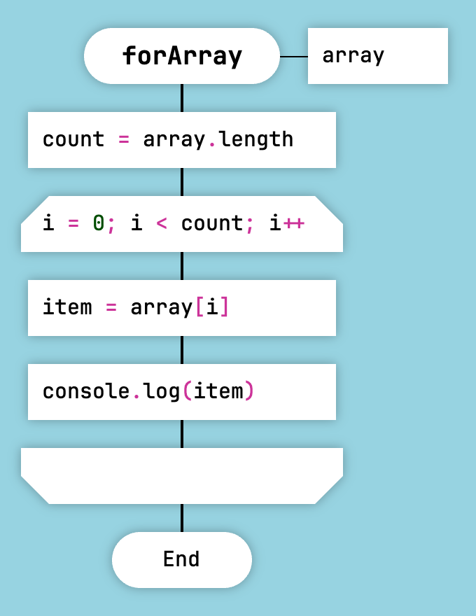
Цикл в стиле for в JavaScript и Lua
Для других языков, таких как OneScript и Перфолента, текст в иконе "Цикл Для" копируется в сгенерированный код без изменений.
Цикл «Для каждого» не поддерживается генератором Clojure.
Можно выйти из цикла «Для каждого» раньше времени при помощи иконы «Вопрос».
Обратите внимание, что выход можно направить только в точку сразу после цикла.
Это не будет работать:
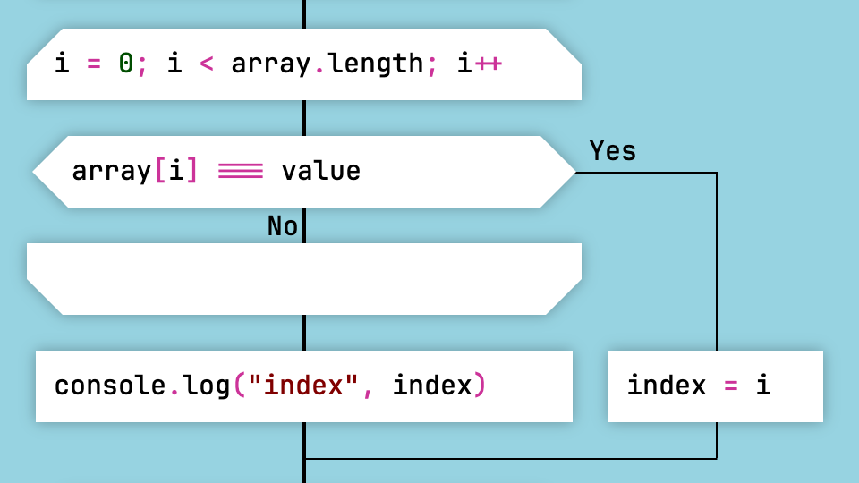
Ранний выход из цикла, который вызовет ошибку
А вот так выход оформлен правильно:
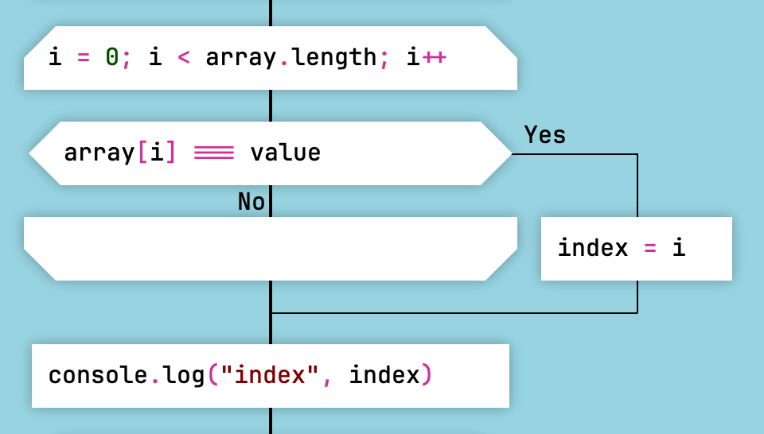
Правильный ранний выход из цикла
Также допустимо завершить функцию оператором return. В этом случае выводить выход за пределы конструкции цикла не требуется.
Однако не используйте ключевое слово break, так как генератор кода его не поддерживает.
Цикл со стрелкой
ДРАКОН заменяет стрелки на блок-схемах обычными линиями.
Однако существует один случай, когда в ДРАКОНе используется стрелка — цикл со стрелкой.
Это делает циклы мгновенно заметными на диаграмме.
Если есть стрелка — значит, есть цикл.
Цикл со стрелкой является аналогом конструкций while и do-while.
Вот как выглядит конструкция while в ДРАКОНе. Сначала выполняется проверка условия цикла. Затем следует тело цикла.
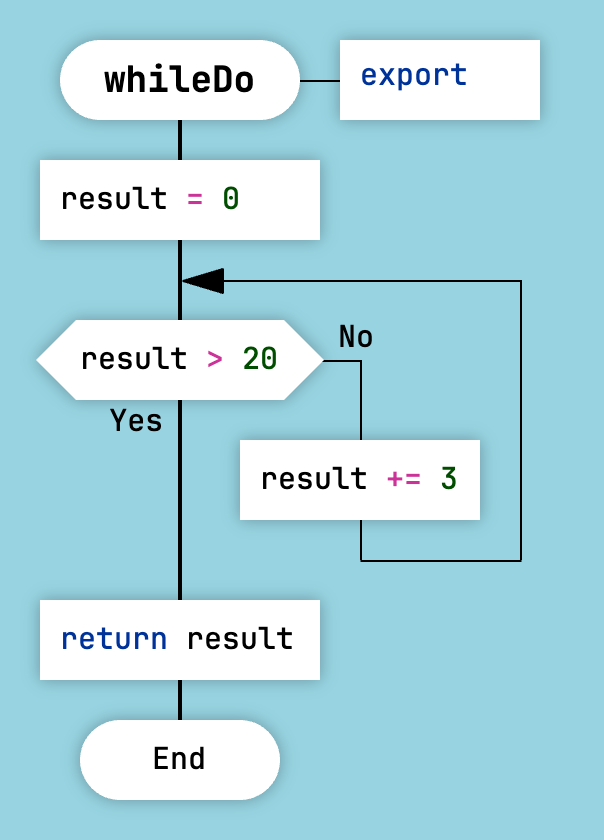
Цикл while в ДРАКОНе
Вот как выглядит конструкция do-while в ДРАКОНе. Сначала выполняется тело цикла. Затем следует проверка условия цикла.
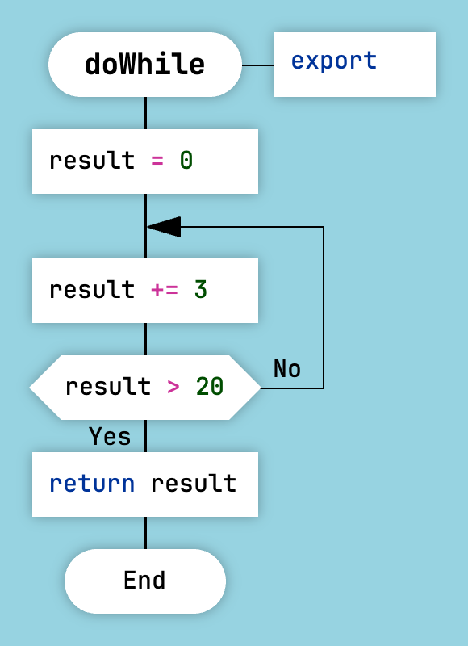
Цикл do-while в ДРАКОНе
В этом примере цикл реализует шаблон действие-проверка-действие:
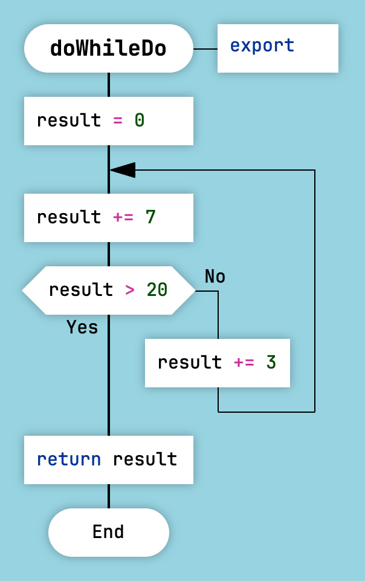
Цикл do-while-do в ДРАКОНе
Цикл со стрелкой не поддерживается генератором Clojure.
Силуэт
Существует два типа дракон-схем: примитивы и силуэты.
Силуэт состоит из нескольких веток. Силуэт делит сложный алгоритм на логические части без декомпозиции.
Чтобы преобразовать примитив в силуэт и обратно, нажмите на кнопку «Силуэт/примитив» на панели инструментов.
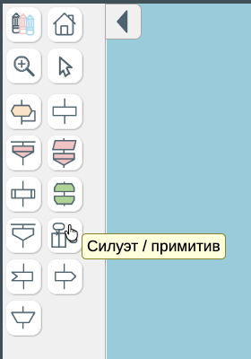
Как создать силуэт в ДраконТех
Декомпозиция — полезный приём, но она имеет свою цену. Очень часто вместо декомпозиции лучше использовать силуэт. Главное преимущество силуэта состоит в том, что он не требует чрезмерной передачи аргументов функций и возвращаемых значений. При этом весь алгоритм остаётся на одной диаграмме.
Ветки силуэта — это главы вашей функции. Поэтому важно давать им хорошие названия. Удачные названия веток помогают объяснить алгоритм.
Первая ветка силуэта находится слева. Последняя ветка находится справа. Между этими границами ветки могут следовать в любом порядке. Однако хорошей практикой считается располагать их слева направо.
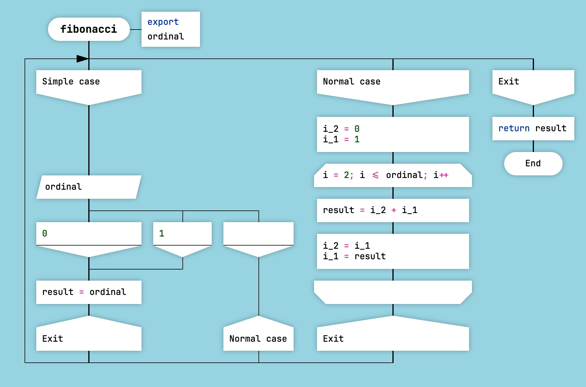
Дракон-схема силуэт
Используйте иконы «Адрес», чтобы управлять тем, какая ветка будет выполнена следующей. На одной ветке силуэта может быть несколько икон «Адрес».
Силуэтный цикл
Одну или несколько веток можно выполнять многократно. Это называется циклом в силуэте. Чтобы создать цикл в силуэте, направьте переход из иконы «Адрес» на ту же ветку, в которой находится тело цикла.
Не забудьте добавить условие выхода. Иначе получится бесконечный цикл.
ДраконТех помечает заголовки веток и иконы «Адрес», участвующие в цикле, специальными маркерами цикла.
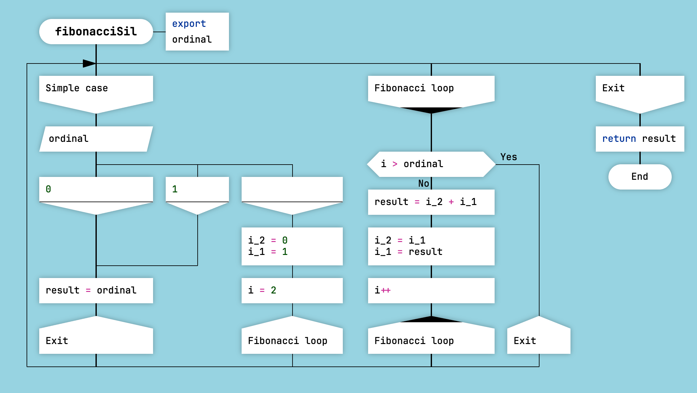
Силуэтный цикл
Это ещё один приём, который ДРАКОН использует для того, чтобы циклы сразу бросались в глаза.
Ветка catch
Для JavaScript ДраконТех поддерживает особую ветку с ключевым именем catch. Ветка catch генерирует обработчик ошибок catch (ex) { ... }.
Чтобы получить доступ к пойманному объекту исключения, вызовите функцию getHandlerData().
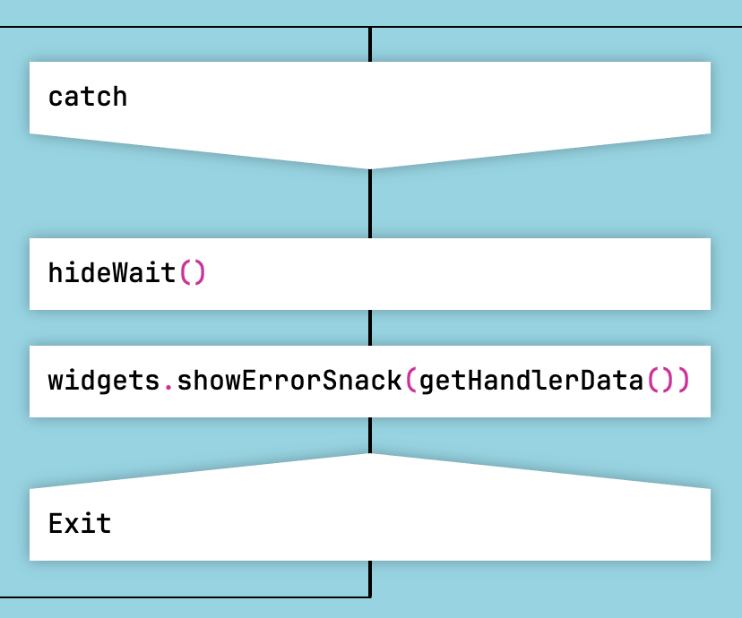
Ветка catch
На ветку catch запрещено ссылаться из других веток.